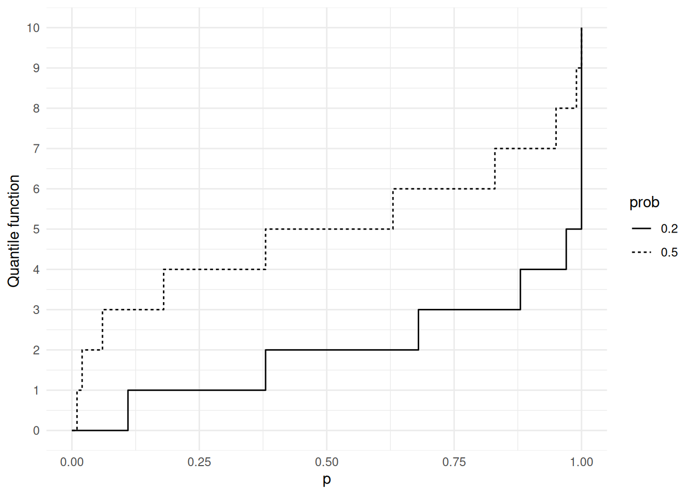
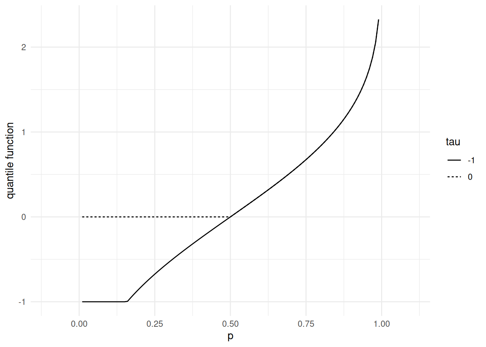
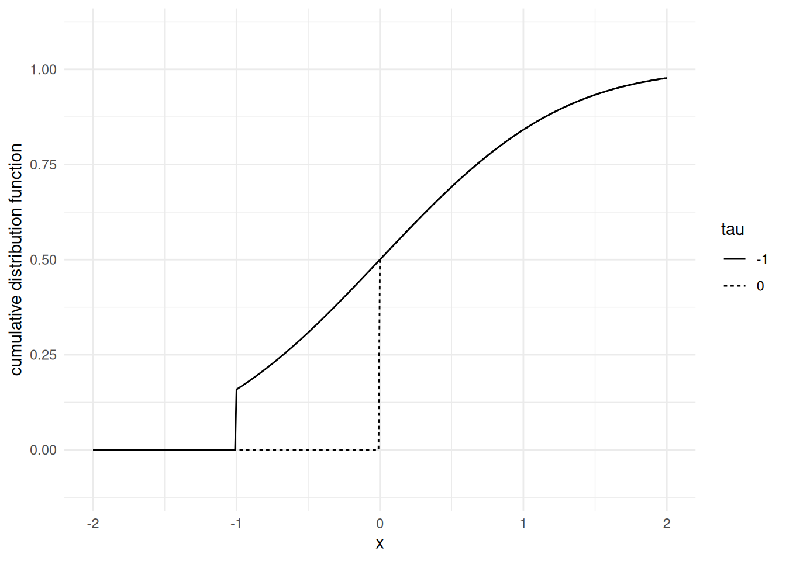
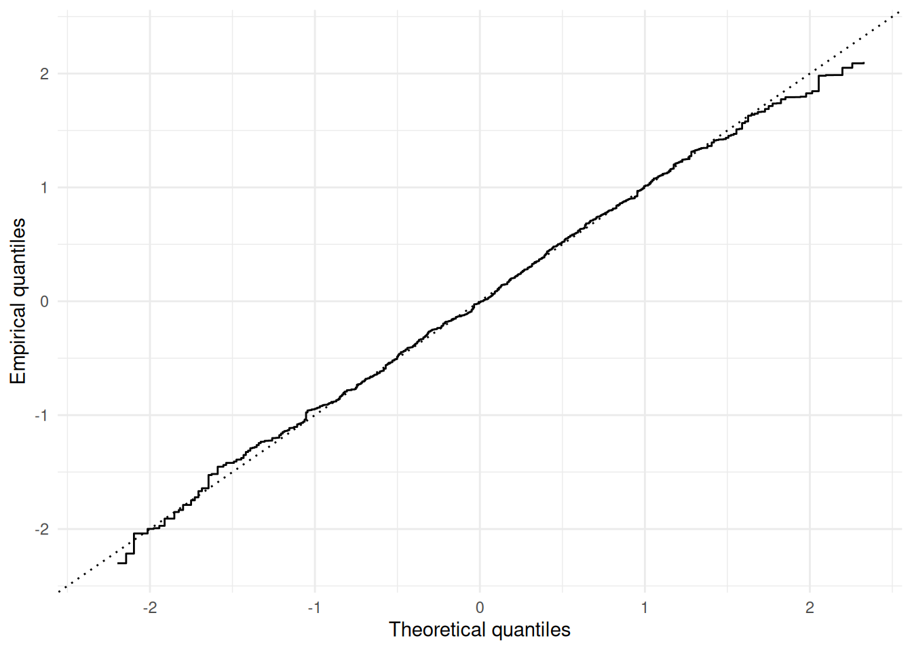

13 Quantile functions and order statistics
So far we have seen several characterizations of probability distributions: cumulative distribution functions (CDFs), Laplace transforms for distributions supported on \([0, \infty)\), characteristic functions. The last characterization is praised for its behavior with respect to sums of independent random variables.
For univariate distributions, a companion to the cumulative distribution function is the quantile function. It plays a significant role in simulations, statistics and risk theory.
Recall that a cumulative distribution function \(F\) is non-negative, \([0,1]\)-valued, non-decreasing, right-continuous, with left-limit at any point. The cumulative distribution function of a diffuse probability measure is continuous at any point.
13.1 Definition
The quantile function \(F^{\leftarrow}\) is defined as an extended/generalized inverse of the cumulative distribution function \(F\).
We first check that this definition makes sense, that is \(F^{\leftarrow} (p) \in \mathbb{R}\) for every \(p \in (0,1)\). Indeed, we establish.
Proof. For any \(p \in (0,1)\), the set \(\{x : F(x) \geq p\}\) is non-empty. If it were empty, the sequence \((F(n))_{n \in \mathbb{N}}\) would be bounded from above by \(p\).
Having \(\inf \{x : F(x) \geq p\}=-\infty\) would contradict \(\lim_{n \to \infty}F(-n)=0\). Hence the infimum of \(\{x : F(x) \geq p\}\) belongs to \(\mathbb{R}\). Let \(m\) denote this infimum. For \(n \in \mathbb{N}\), let \(t_n = m +1/n\). We have \(F(t_n)\geq p\), otherwise \(m\) would not be the infimum of \(\{x : F(x) \geq p\}\). The sequence \((F(t_n))_{n \in \mathbb{N}}\) converges to \(F(m)\) (right-continuity of \(F\)) and the limit is lower bounded by \(p\). Hence, \(F(m) \geq p\), so \(m \in \inf \{x : F(x) \geq p\}\). This means: \[\inf \{x : F(x) \geq p\}= \min \{x : F(x) \geq p\} \, .\]
Proposition 13.1 asserts that Definition 13.1 is sound.
Proof.
-
Let \(F\) be the Cumulative Distribution Function of some probability distribution over \((\mathbb{R}, \mathcal{B}(\mathbb{R}) )\). Let \(F^{\leftarrow}\) be the associated quantile function.
If \(0 <p \leq p' < 1\), \(\{ t : t \in \mathbb{R} F(t) \geq p'\} \subseteq \{ t : t \in \mathbb{R} F(t) \geq p\}\), hence \(F^\leftarrow(p') = \inf \{ t : t \in \mathbb{R} F(t) \geq p'\} \geq \inf \{ t : t \in \mathbb{R} F(t) \geq p\} =F^\leftarrow(p)\).
-
To check left-continuity of \(F^\leftarrow\), it is enough to check that for each \(u \in (0,1)\), for each increasing sequence \((u_n)_n\) such that \(\lim_n u_n = u\), we have \(\lim_n F^\leftarrow(u_n) = F^\leftarrow(u)\).
As \(F^\leftarrow\) is non-decreasing, \((F^\leftarrow(u_n))_n\) is a non-decreasing sequence bounded above by \(F^\leftarrow(u)\). Hence it converges to some limit \(\ell \leq F^\leftarrow(u)\).
Suppose \(\ell < F^\leftarrow(u)\). Then \(F(\ell) < u\) as \(F^\leftarrow(u)\) is the infimum of the set \(\{x : F(x) \geq u\}\).
But then \(u_n > F(\ell)\) and \(\ell < F^\leftarrow(u_n)\) for all \(n\) large enough since \((u_n)_n\) is an increasing sequence converging to \(u\), which contradicts the fact that \(\ell\) is the monotone limit of \((F^\leftarrow(u_n))_n\).
Thus \(\ell = F^\leftarrow(u)\).
To check the existence of the right-hand limit, it is enough to remember that a quantile function is non-decreasing.
Note that, as a non-decrasing function, a quantile function is always Borel-measurable.
The interplay between the quantile and cumulative distribution functions is summarized in the next proposition.
Proof. According to the definition of \(F^\leftarrow\) if \(F (x) \geq p\) then \(F^\leftarrow (p) \leq x.\)
To prove the converse, it suffices to check that \(F \circ F^\leftarrow (p) \geq p\).
Indeed, if \(x \geq F^\leftarrow (p),\) as \(F\) is non-decreasing \(F (x) \geq F \circ F^\leftarrow (p)\). If \(y = F^\leftarrow (p),\) by definition of \(y = F^\leftarrow (p),\) there exists a non-increasing sequence \((z_n)_{n \in \mathbb{N}}\) which converges to \(y\) such that \(F (z_n) \geq p .\) But as \(F\) is right-continuous \(\lim_n F (z_n) = F (\lim_n z_n) = F (y) .\) Hence \(F (y) \geq p\).
We just proved 1. and 2.
3.) is an immediate consequence de 1). Let \(p = F (x) .\) Hence \(p \leq F (x),\) according to 1.) this is equivalent to \(F^\leftarrow (p) \leq x,\) that is \(F^\leftarrow \circ F (x) \leq x.\)
4.) For \(p\) in \(] 0, 1 [,\) let \(y = \inf \{ x : F (x)\geq p \} =F^\leftarrow (p)\). According to \(1)\), \(F (y) \geq p\). Now, if \((z_n)_{n \in \mathbb{N}}\) is an increasing sequence converging to \(y\), for every \(n\), \(F (z_n) < p,\) and, by continuity, \(F (y) = F (\lim_n z_n) = \lim_n F (z_n) \leq p.\) Hence \(F (y) = p,\) that is \(F \circ F^\leftarrow (p) = p.\)
13.2 Quantile functions and stochastic simulation
Proof. \[\begin{array}{rl} P\Big\{ F^\leftarrow(U) \leq x \Big\} & = P\Big\{ U \leq F(x) \Big\} \\ & = F(x) \, \end{array}\] where the first equality follows from a) in Proposition 13.3.
Remark 13.1. The quantile transformation works whatever the continuity properties of \(F\).
The quantile transformation has many applications. It can be used to show stochastic domination properties. It can be used to build random generators once a uniform random generator is avalaible.
Example 13.1 In Figures 13.1 up to Figure 13.4, we illustrate quantile functions for discrete (binomial) distributions and for distributions that are neither discrete nor continuous. The quantile function of a discrete distribution is step function that jumps at the cumulative probability of every possible outcome. If a probability distribution is a mixture of a discrete distribution and a continuous distribution, the quantile function jumps at the cumulative probability of every possible outcome of the discrete component.




Let us conclude this section with an important observation. concerning the behavior of \(F(X)\) when \(X \sim P\) with cumulative distribution function \(F\).
We conclude with the next remark. The quantile function characterizes the probability distribution.
13.3 Order statistics
When \(n\) is clear from context, we may write \(X_{(1)} \leq \ldots \leq X_{(n)}\).
Recall that a probability distribution \(P\) over \(\mathbb{R}, \mathcal{B}(\mathbb{R})\) is diffuse if and only if \(P\{x\}=0\) for all \(x\in \mathbb{R}\). A probability distribution is diffuse iff its cumulative distribution function is continuous everywhere.
Proof. We first observe that it is enough to check that \(\mathbb{P} \left\{ X_1 = X_2\right\}=0\). Under the stated conditions
\[\begin{align*} \mathbb{P} \left\{ \cup_{i < j} X_i = X_j \right\} & \leq \sum_{i < j} \mathbb{P} \left\{ X_i = X_j \right\} \\ & = \binom{n}{2} \mathbb{P} \left\{ X_1 = X_2 \right\} \end{align*}\] where inequality comes from union bound (subadditivity), and last equality comes from the fact that all pairs \(X_i, X_j\) with \(i <j\) are distributed like \(X_1, X_2\).
Now \[\begin{align*} \mathbb{P} \left\{ X_1 = X_2 \right\} & = \int_{\mathbb{R}^2} \mathbb{I}_{x_1=x_2} \mathrm{d}P^{\otimes 2}(x_1,x_2) \\ & = \int_{\mathbb{R}} \left(\int_{\mathbb{R}} \mathbb{I}_{x_1=x_2} \mathrm{d}P(x_1) \right) \mathrm{d}P(x_2) \\ & = \int_{\mathbb{R}} \, 0 \, \mathrm{d}P(x_2) \\ & = 0 \end{align*}\] where we have used Theorem 7.2 and then the fact that \(P\) is diffuse.
Proof. Let \(E \in \mathcal{B}(\mathbb{R}^n)\) denote the event: \[\left\{(x_1,\ldots,x_n) : \text{ for all } 1\leq i < j \leq n, x_i \neq x_j\right\}\]
By Proposition 13.5, we have \(\mathbb{P} \left\{E \right\}=1\). If \((x_1,\ldots,x_n) \in E\), the \(n!\) permutations of \((x_1,\ldots,x_n)\) are pairwise distinct.
In the sequel, \(S_n\) denotes the set of all permutations of \(\{1, \ldots, n\}\).
Let \(F \in \mathcal{B}(\mathbb{R}^n)\) denote the event: \[\left\{(x_1,\ldots,x_n) : \text{ for all } 1\leq i < j \leq n, x_i < x_j\right\}\] Note that \(F \subset E\) and \[\mathbb{I}_{\left(x_{1},\ldots,x_{n}\right) \in F}=\mathbb{I}_{x_{1} < \ldots < x_{n}}\]
Let \(A \in \mathcal{B}(\mathbb{R}^n)\) be a Borel set. Then,
\[\begin{align*} \mathbb{P} \left\{ (X_{(1)},\ldots,X_{(n)}) \in A \right\} & = \mathbb{P} \left\{ (X_{(1)},\ldots,X_{(n)}) \in A \cap E \right\} + \mathbb{P} \left\{ (X_{(1)},\ldots,X_{(n)}) \in A \cap E^c \right\} \\ & = \mathbb{P} \left\{ (X_{(1)},\ldots,X_{(n)}) \in A \cap E \right\} \\ & = \sum_{\sigma \in S_n} \mathbb{P} \left\{ (X_{\sigma(1)},\ldots,X_{\sigma(n)}) \in A \cap F \right\} \\ & = \sum_{\sigma \in S_n} \int_{\mathbb{R^n}}\, \mathbb{I}_{\left(x_{\sigma(1)},\ldots,x_{\sigma(n)}\right) \in A \cap F} \prod_{i=1}^n p(x_i) \, \mathrm{d}x_1\ldots\mathrm{d}x_n \\ & = \int_{\mathbb{R^n}}\, \mathbb{I}_{\left(x_{1},\ldots,x_{n}\right) \in A} \left(n! \mathbb{I}_{\left(x_{1},\ldots,x_{n}\right) \in F} \prod_{i=1}^n p(x_i) \right) \, \mathrm{d}x_1\ldots\mathrm{d}x_n \end{align*}\] The parenthesized expression within the integrand is a density of the joint distribution of the order statistics.
Proof. The \(k^{\text{th}}\) order statistic is smaller than \(x\) if and only if at least \(k\) of the \(X_i\) are smaller than \(x\). Hence the event \(\{ X_{(k)} \leq x \}\) is the disjoint union of the events \(\left\{ j =\sum_{i=1}^n \mathbb{I}_{X_i\leq x}\right\}\) for \(j \in \{k, \ldots, n\}\)
The cumulative distribution function of (the distribution of the \(k^{\text{th}}\) order statistics) is:
\[F_{X_{(k)}}(x) = \sum_{j=k}^n \binom{n}{j} F(x)^j (1-F(x))^{n-j}\]
As \(F\) is differentiable almost everywhere, \(F_{X_{(k)}}\) is differentiable almost everywhere, and its derivative can be chosen as the density function in Proposition 13.7. Indeed
\[\begin{align*} f_{X_{(k)}}(x) & = \sum_{j=k}^n \binom{n}{j} \left[ j F(x)^{j-1} f(x) (1-F(x))^{n-j} - (n-j) F(x)^j f(x) (1-F(x))^{n-j-1} \right] \end{align*}\]
The summation on the right-hand side can be rearranged by combining the positive term and negative term \(F(x)^j f(x) (1-F(x))^{n-j-1}\) with \(j\) from \(k\) to \(n-1\).
\[\begin{align*} f_{X_{(k)}}(x) & = \sum_{j=k}^{n-1} F(x)^j f(x) (1-F(x))^{n-j-1} \left((j+1) \binom{n}{j+1} - (n-j)\binom{n}{j} \right) \\ & \phantom{ } + \binom{n}{k} k F(x)^{k-1} f(x) (1-F(x))^{n-k} \\ & = k \binom{n}{k} F(x)^{k-1} f(x) (1-F(x))^{n-k} \end{align*}\] as \[(j+1) \binom{n}{j+1} - (n-j)\binom{n}{j}=0\] for \(j\) from \(k\) to \(n-1\).
Proof. To establish i), it is enough to check that the joint density of the spacings has a product form.
Let \(Y_i = X_{i:n} - X_{i-1:n}\) for \(i=1,\ldots,n\) denote the \(k\)-th spacing. The spacings can be computed from the order statistics by a linear transformation: \[\begin{bmatrix} Y_1 \\ \vdots \\ Y_n \end{bmatrix} = \begin{bmatrix} 1 & 0 & \cdots & 0 \\ -1 & 1 & \cdots & 0 \\ \vdots & \ddots & \ddots & \ddots \\ 0 & \cdots & -1 & 1 \end{bmatrix} \begin{bmatrix} X_{1:n} \\ \vdots \\ X_{n:n} \end{bmatrix}\] with inverse \[ \begin{bmatrix} X_{1:n} \\ \vdots \\ X_{n:n} \end{bmatrix} = \begin{bmatrix} 1 & 1 & 1 & \cdots & 1 \\ 0 & 1 & 1 & \cdots & 1 \\ \vdots & \ddots & \ddots & \ddots & \vdots \\ 0 & 0 & \cdots & 0 & 1 \end{bmatrix} \begin{bmatrix} Y_1 \\ \vdots \\ Y_n \end{bmatrix} \] Both matrices have determinant \(1\).
By Theorem 9.5, the joint density of the spacings is \[\begin{align*} f_{Y_1, \ldots, Y_n}(y_1, \ldots, y_n) & = n! \prod_{i=1}^n \mathbb{I}_{\sum_{j=1}^i y_j > \sum_{j=1}^{i-1} y_j}\prod_{i=1}^n \mathrm{e}^{-\sum_{j=1}^i y_j} \\ & = n! \prod_{i=1}^n \mathbb{I}_{y_i >0} \mathrm{e}^{- (n+1-i) y_i} \\ & = \prod_{i=1}^n \mathbb{I}_{y_i >0} (n+1-i) \mathrm{e}^{- (n+1-i) y_i} \end{align*}\] In the last expression, we recognize that the joint density is the product exponential densities with mean \(\tfrac{1}{n+1-i}\) for \(i \in 1,\ldots,n\).
Proof. The random vector \[ \begin{bmatrix} V_1 \\ V_2 \\ \vdots \\ V_{n+1} \end{bmatrix} = \begin{bmatrix}\frac{S_1}{S_{n+1}} \\ \vdots \\ \frac{S_n}{S_{n+1}} \\ S_{n+1}\end{bmatrix} \] is a differentiable bijective transform of \((Y_1, \ldots, Y_{n+1} )^\top\) with inverse transform:
\[\begin{bmatrix}Y_1 \\ \vdots \\ Y_{n+1}\end{bmatrix} = V_{n+1}\begin{bmatrix} V_1 \\ V_2 -V_1 \\ \vdots \\ V_n - V_{n-1} \\ 1 - V_n \end{bmatrix}\]
The Jacobian matrix of the inverse transform is easily computed: \[ \begin{bmatrix} V_{n+1} & 0 & 0 & \ldots & V_1 \\ -V_{n+1} & V_{n+1} & 0 & \ddots & V_2-V_1 \\ 0 & \ddots & \ddots & \ddots & \vdots \\ 0 & \ddots & -V_{n+1} & V_{n+1} & V_n-V_{n-1} \\ 0 & & 0 & -V_{n+1} & 1 -V_n \end{bmatrix} \] The Jacobian determinant is equal to \[ V_{n+1}^n \times \operatorname{det} \begin{bmatrix} 1 & 0 & 0 & \ldots & V_1 \\ -1 & 1 & 0 & \ddots & V_2-V_1 \\ 0 & \ddots & \ddots & \ddots & \vdots \\ 0 & \ddots & -1 & 1 & V_n-V_{n-1} \\ 0 & & 0 & -1 & 1 -V_n \end{bmatrix} \] which equals \[ V_{n+1}^n \times \operatorname{det} \begin{bmatrix} 1 & 0 & 0 & \ldots & V_1 \\ 0 & 1 & 0 & \ddots & V_2 \\ 0 & \ddots & \ddots & \ddots & \vdots \\ 0 & \ddots & 0 & 1 & V_n \\ 0 & & 0 & 0 & 1 \end{bmatrix} \] which equals \(V_{n+1}^n\).
By Theorem 9.5, the joint density of the distribution of \((V_1,V_2,\ldots,V_{n+1})^\top\) at \((v_1,v_2,\ldots,v_{n+1})\) is equal to:
\[\frac{1}{\Gamma(n+1)} \mathbb{I}_{v_{n+1}>0} v_{n+1}^n \mathrm{e}^{-v_{n+1}} n !\prod_{i=1}^{n-1} \mathbb{I}_{v_i<v_{i+1}} \mathbb{I}_{0 < v_1} \mathbb{I}_{v_n < 1}\]
We recognize \(\frac{1}{\Gamma(n+1)} \mathbb{I}_{v_{n+1}>0} v_{n+1}^n \mathrm{e}^{-v_{n+1}}\) as the density of a Gamma distribution with parameters \(n+1,1\).
We recognize \(n! \mathbb{I}_{0<v_1 < \ldots <v_n <1}\) as the joint density of the order statistics of sample of the uniform distribution over \([0,1]\).
- The density of the distribution of \(\left(\frac{S_1}{S_{n+1}}, \ldots, \frac{S_n}{S_{n+1}}, S_{n+1}\right)\) is the product of the joint density of \(\frac{S_1}{S_{n+1}}, \ldots, \frac{S_n}{S_{n+1}}\) Beta-Dirichlet with parameters \(1,\ldots\) and of a Gamma density with parameters \(n+1, 1\).
As a consequence the \(k^{\text{th}}\) order statistic of an \(n\)-sample of the uniform distribution over \([0,1]\) is distributed like \(\frac{S_k}{S_{n+1}}\). The latter random variiable is distributed according to a \(\operatorname{Beta}(k, n+1-k)\) distribution with density \(x \mapsto \frac{\Gamma(n+1)}{\Gamma(k)\Gamma(n+1-k)} x^{k-1}(1-x)^{n-k}\). See Proposition 9.2.
All spacings are distributed like \(\frac{S_1}{S_{n+1}}\), that is according to a Beta distribution with parameters \(1\) and \(n\), with density \(x \mapsto \frac{\Gamma(n+1)}{\Gamma(1)\Gamma(n)}(1-x)^{n-1} = n (1-x)^{n-1}\). See again Proposition 9.2.